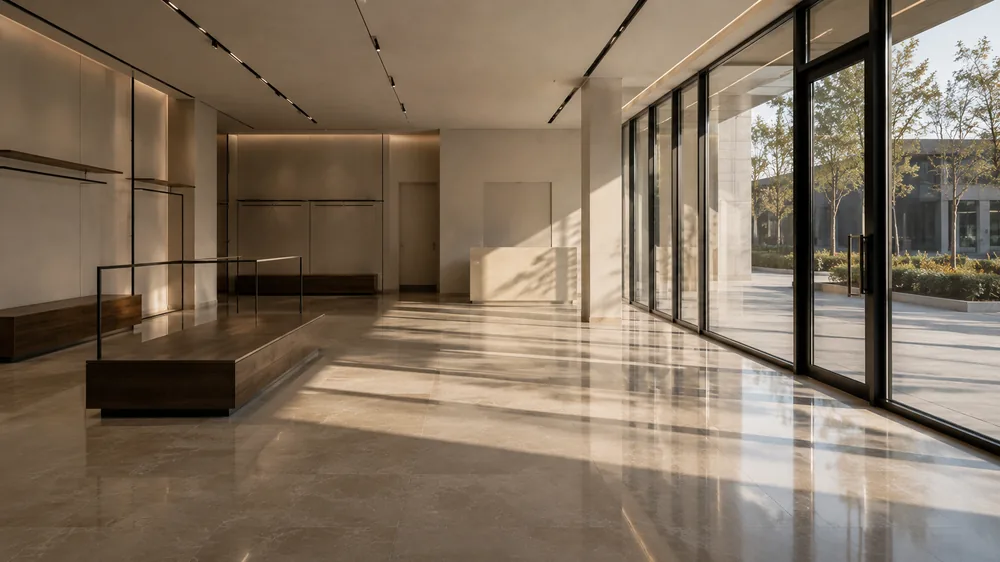

01
Commerces et boutiques
La contrainte : le créneau.
Un commerce se nettoie avant l'ouverture ou après la fermeture, jamais devant le client. Sur le Golfe, la saison change tout : ce qui tenait la semaine en février se joue en deux jours au 15 août, avec le sable rapporté des plages qui abrase les sols à chaque passage.
Nettoyage de commerces à Saint-Tropez